aad-01 Location gate: 4.77 km from challenge Martin Falbisoner CC BY-SA 3.0 Commons resized to 1200px, cropped, re-encoded WebP, metadata stripped
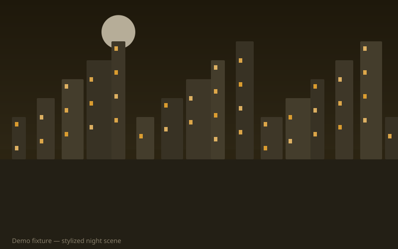
aad-02 SVG fallback Reverted to SVG: prior automatic Commons pick failed location-verified policy. Add a vetted pick in data/photo-commons-picks.json.
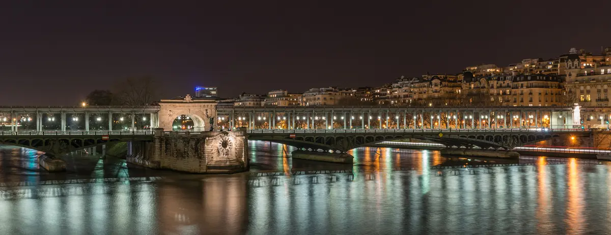
aad-03 Location gate: 4.59 km from challenge DXR CC BY-SA 3.0 Commons resized to 1200px, cropped, re-encoded WebP, metadata stripped
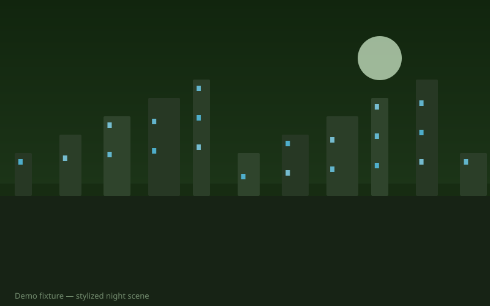
aad-04 SVG fallback Reverted to SVG: prior automatic Commons pick failed location-verified policy. Add a vetted pick in data/photo-commons-picks.json.
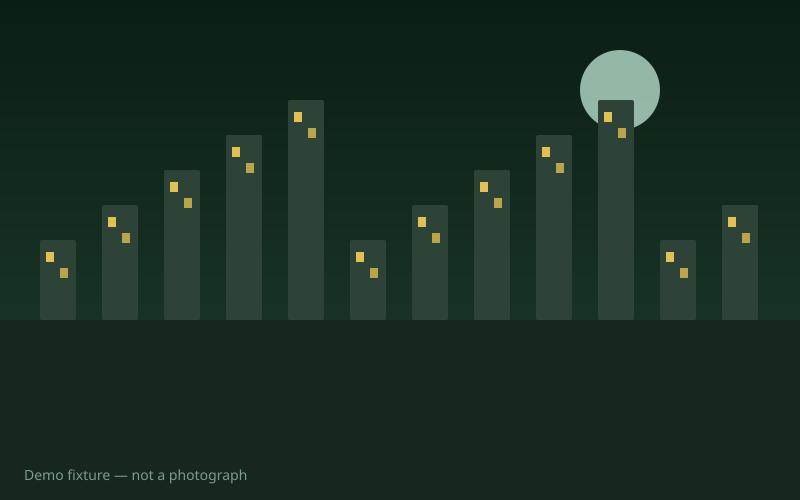
aad-05 SVG fallback Reverted to SVG: prior automatic Commons pick failed location-verified policy. Add a vetted pick in data/photo-commons-picks.json.
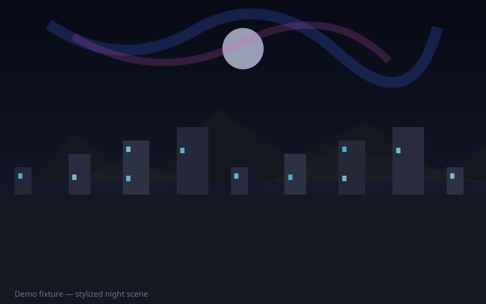
aad-06 SVG fallback Reverted to SVG: prior automatic Commons pick failed location-verified policy. Add a vetted pick in data/photo-commons-picks.json.
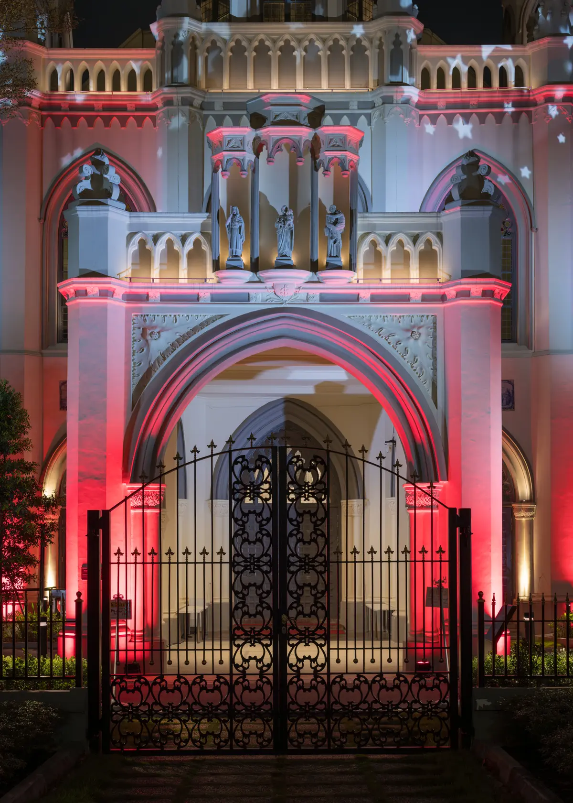
aad-07 Location gate: 7.07 km from challenge Frank Schulenburg CC BY-SA 4.0 Commons resized to 1200px, cropped, re-encoded WebP, metadata stripped
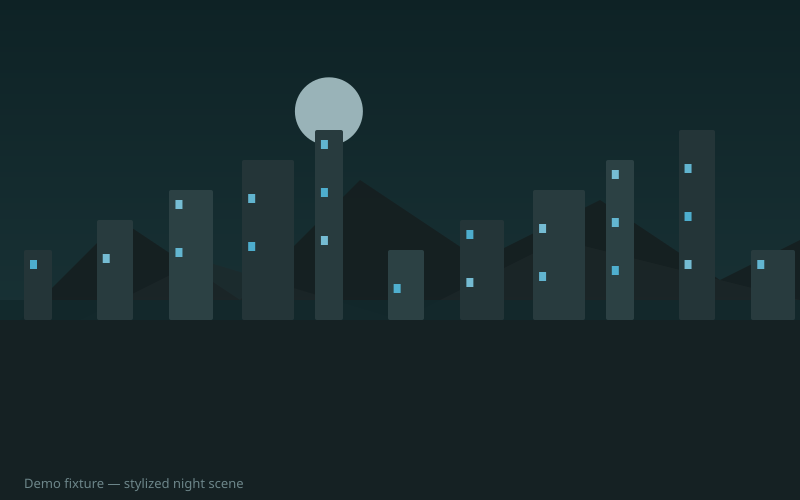
aad-08 SVG fallback Reverted to SVG: prior automatic Commons pick failed location-verified policy. Add a vetted pick in data/photo-commons-picks.json.
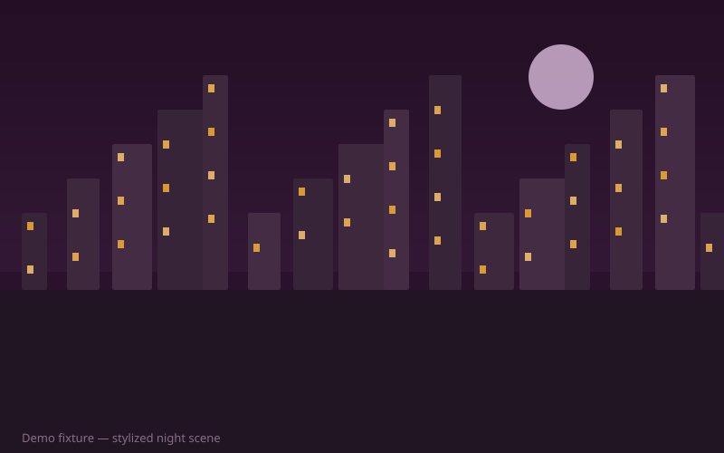
aad-09 SVG fallback Reverted to SVG: prior automatic Commons pick failed location-verified policy. Add a vetted pick in data/photo-commons-picks.json.
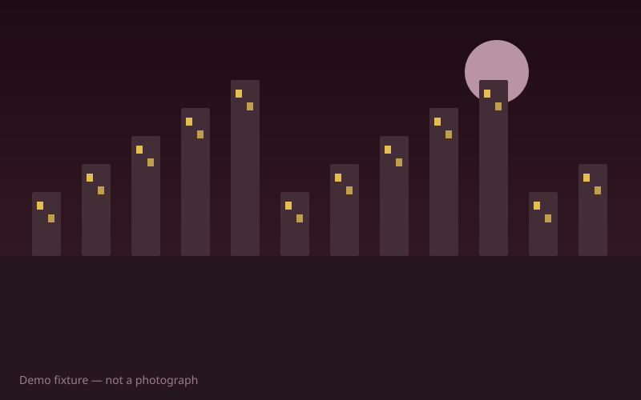
aad-10 SVG fallback Reverted to SVG: prior automatic Commons pick failed location-verified policy. Add a vetted pick in data/photo-commons-picks.json.
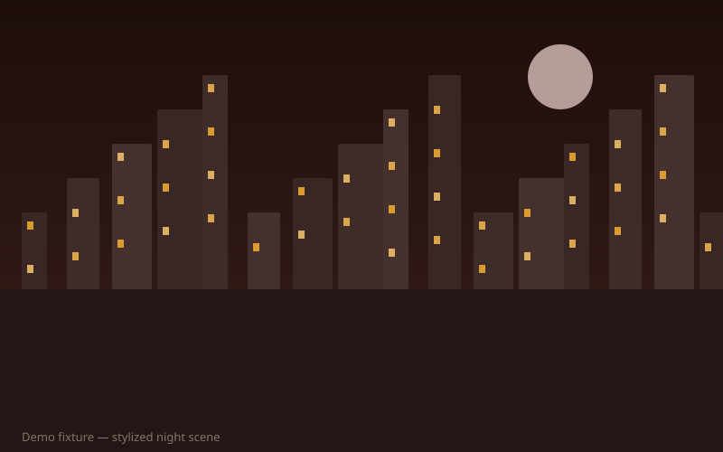
aad-11 SVG fallback Reverted to SVG: prior automatic Commons pick failed location-verified policy. Add a vetted pick in data/photo-commons-picks.json.
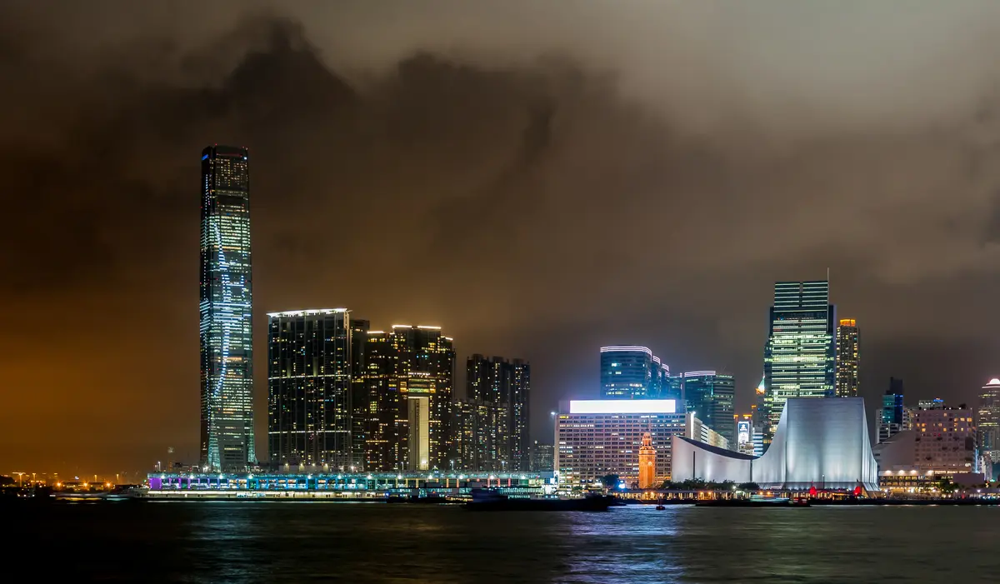
aad-12 Location gate: 2.01 km from challenge Wilfredor CC0 Commons resized to 1200px, cropped, re-encoded WebP, metadata stripped
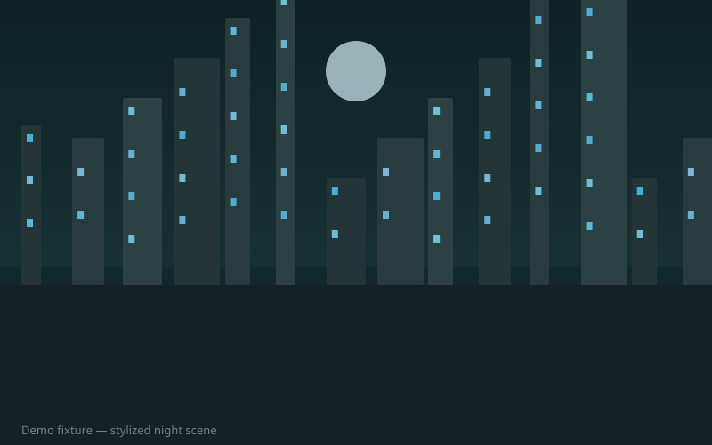
aad-13 SVG fallback No Commons candidate passed license, content, and location gates for Dubai. See C:\Users\chaus\Projects\atlas-after-dark\data\photo-fetch-rejections.jsonl.
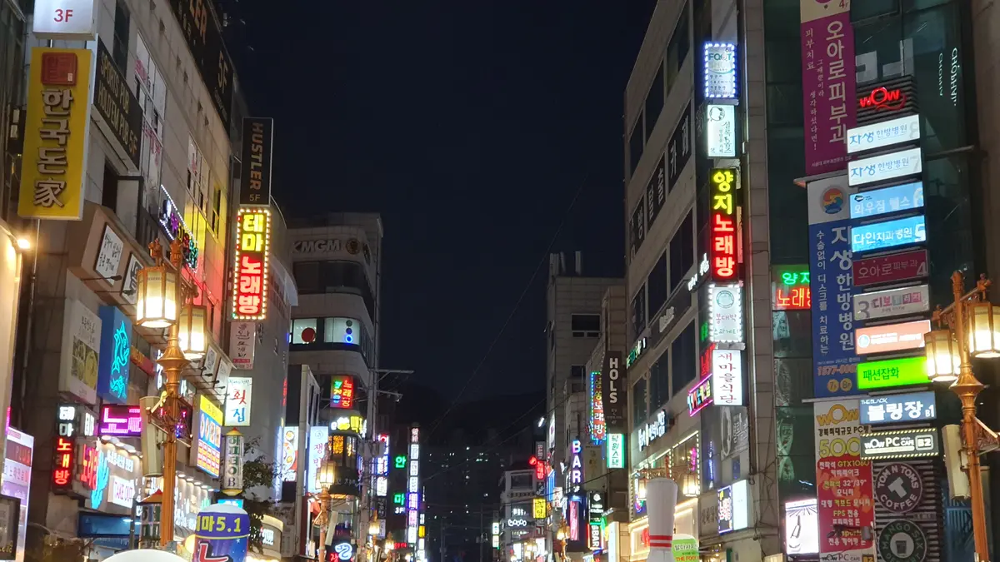
aad-14 Location gate: 9.43 km from challenge 최광모 CC BY-SA 4.0 Commons resized to 1200px, cropped, re-encoded WebP, metadata stripped
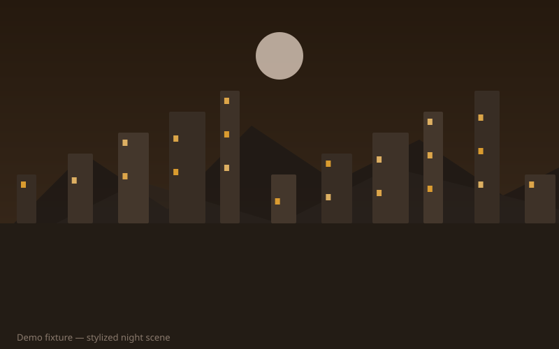
aad-15 SVG fallback Reverted to SVG: prior automatic Commons pick failed location-verified policy. Add a vetted pick in data/photo-commons-picks.json.
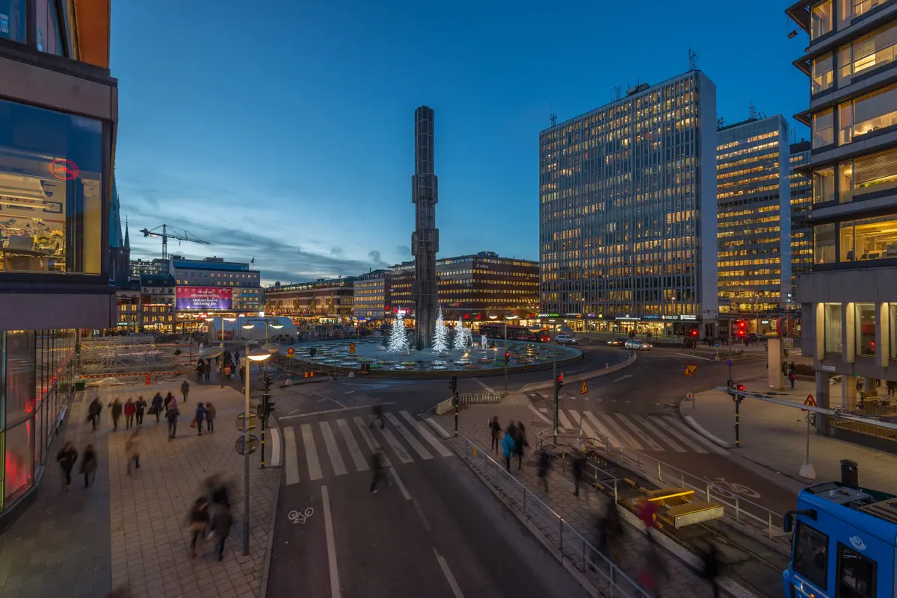
aad-16 Location gate: 0.37 km from challenge Arild Vågen CC BY-SA 4.0 Commons resized to 1200px, cropped, re-encoded WebP, metadata stripped
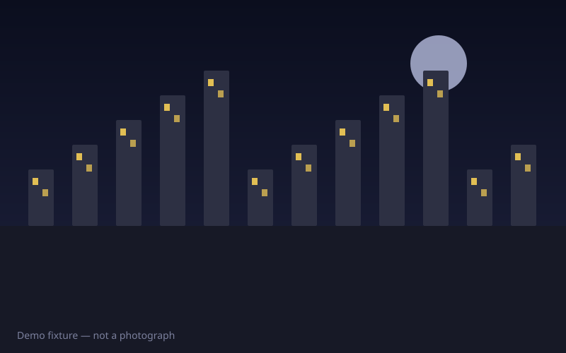
aad-17 SVG fallback No Commons candidate passed license, content, and location gates for Nairobi. See C:\Users\chaus\Projects\atlas-after-dark\data\photo-fetch-rejections.jsonl.
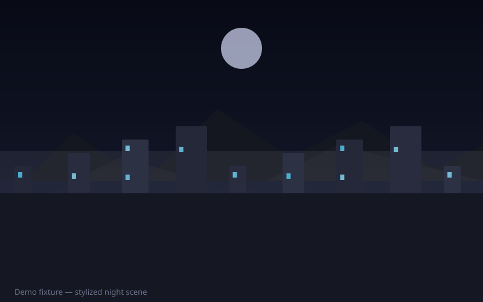
aad-18 SVG fallback Reverted to SVG: prior automatic Commons pick failed location-verified policy. Add a vetted pick in data/photo-commons-picks.json.
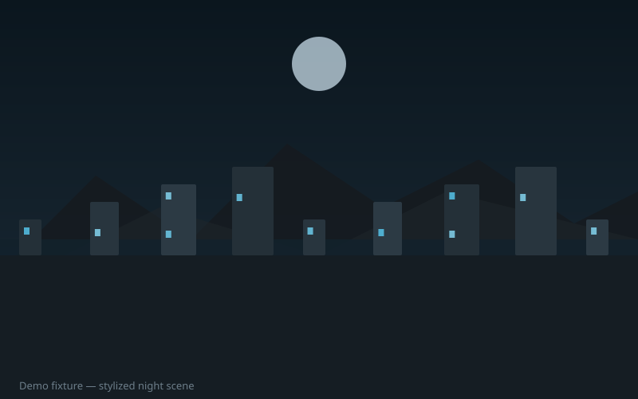
aad-19 SVG fallback No Commons candidate passed license, content, and location gates for Wellington. See C:\Users\chaus\Projects\atlas-after-dark\data\photo-fetch-rejections.jsonl.
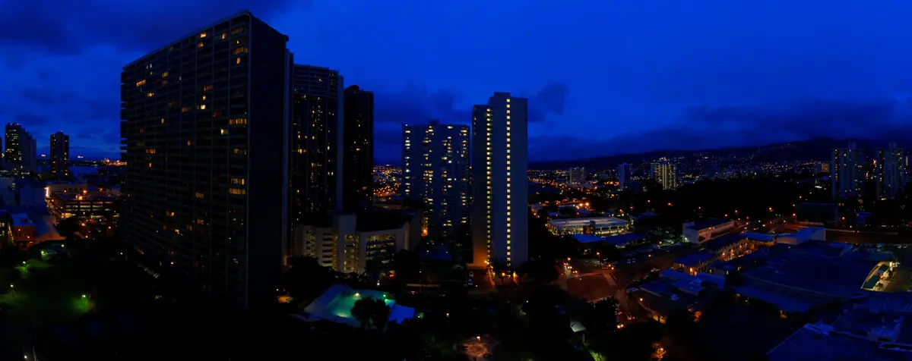
aad-20 Location gate: 0.6 km from challenge Daniel Ramirez from Honolulu, USA CC BY 2.0 Commons resized to 1200px, cropped, re-encoded WebP, metadata stripped
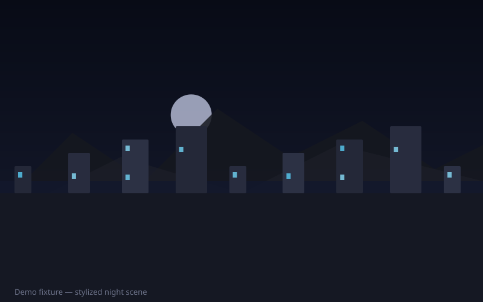
aad-21 SVG fallback No Commons candidate passed license, content, and location gates for Oslo. See C:\Users\chaus\Projects\atlas-after-dark\data\photo-fetch-rejections.jsonl.
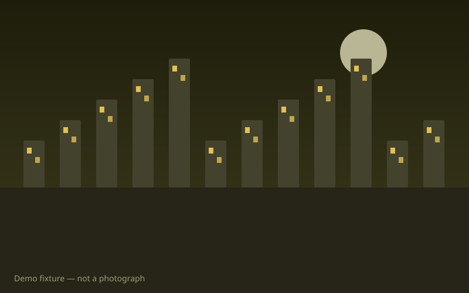
aad-22 SVG fallback No Commons candidate passed license, content, and location gates for Lima. See C:\Users\chaus\Projects\atlas-after-dark\data\photo-fetch-rejections.jsonl.aad-23 SVG fallback Reverted to SVG: prior automatic Commons pick failed location-verified policy. Add a vetted pick in data/photo-commons-picks.json.
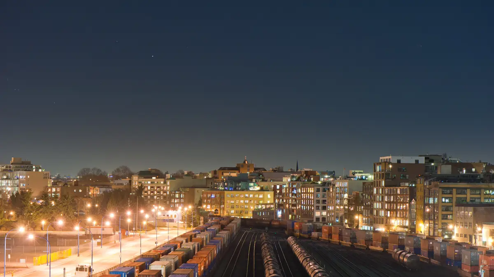
aad-24 Location gate: 0.78 km from challenge Kenny Louie from Vancouver, Canada CC BY 2.0 Commons resized to 1200px, cropped, re-encoded WebP, metadata stripped
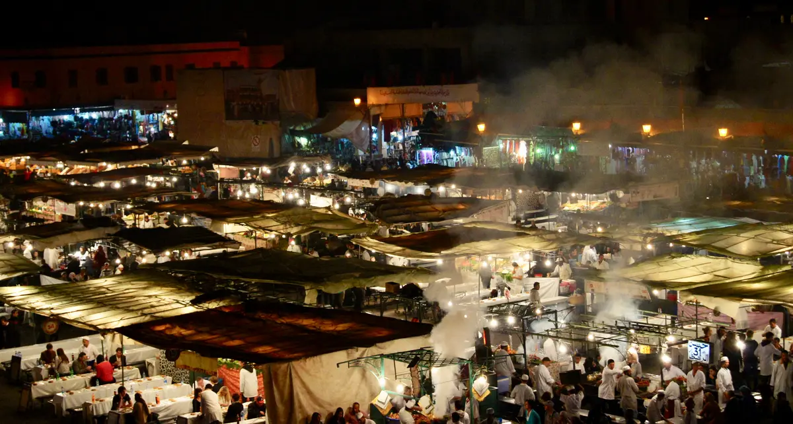
aad-25 Location gate: 0.64 km from challenge Barbara-Ingeborg CC BY-SA 4.0 Commons resized to 1200px, cropped, re-encoded WebP, metadata stripped


-L1003741.jpg){kind=link}


.jpg){kind=link}
.jpg){kind=link}